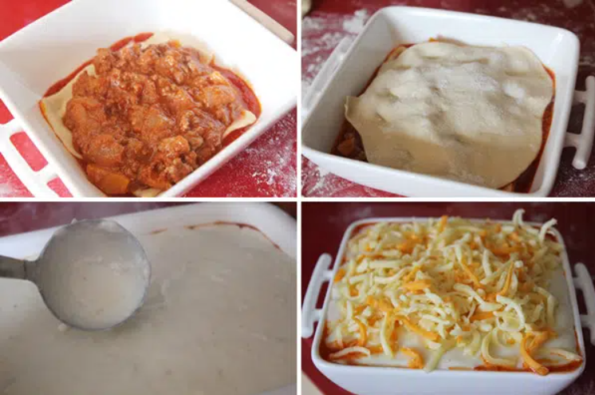
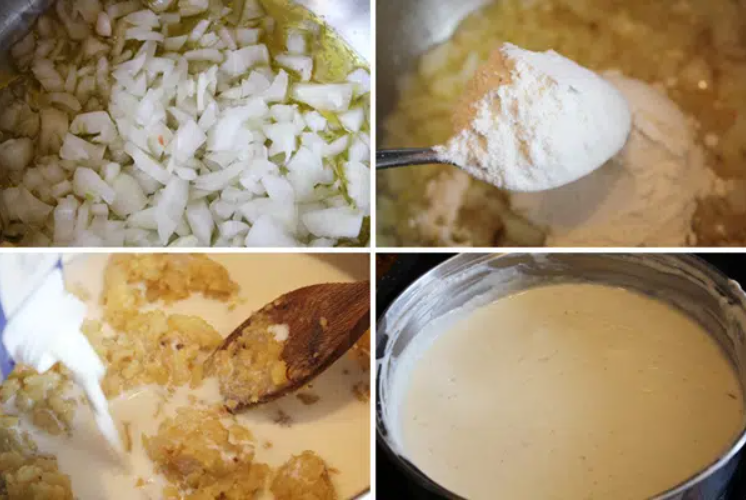
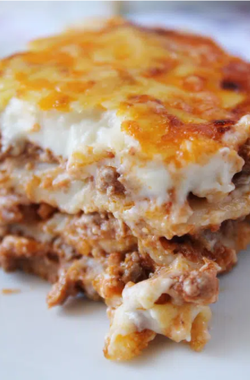

Lasaña de carne
Ingredientes
- 1 cebolla
- 4 o 5 zanahorias
- 1/2 kilo de carne de ternera
- 1 vaso de vino tinto
- 1 vaso de leche
- 1 lata de tomate triturado (800 gramos)
- Sal, Nuez moscada y Pimienta negra
Preparacion
- Para preparar la salsa boloñesa, pelamos las zanahorias y la cebolla y picamos, en una cazuela alta pochamos con un poco de aceite de oliva virgen extra
- Cuando comiencen a dorarse incorporamos la carne, mezclamos y cocinamos hasta que la carne cambie de color, incorporamos el vino tinto, dejamos unos cinco minutos para que se evapore el alcohol, añadimos la leche, una pizca de sal, nuez moscada y pimienta negra, mezclamos y dejamos cocinar unos cinco minutos. Añadimos el tomate triturado y dejamos cocinar a fuego suave unos 40 minutos.
- Por cierto, normalmente la salsa boloñesa lleva también apio pero como en casa no nos gusta no se lo he puesto, pero si os gusta se lo podéis añadir al resto de verduras al principio.

- Una vez que tenemos lista nuestra salsa boloñesa casera vamos a preparar nuestra lasaña.

- Ponemos en la fuente el tomate frito, encima una capa de pasta, si utilizamos pasta fresca la pincharemos con un cuchillo, sobre la pasta ponemos una capa de salsa boloñesa, otra de pasta, otra de salsa boloñesa, otra de pasta y una última de boloñesa. Reservamos.

- Preparemos una salsa bechamel, para ello en una cazuela ponemos una cebolla picada con un poco de sal y pochamos en aceite de oliva virgen extra, cuando comience a dorarse añadimos la harina, cocinamos y agregamos la leche poco a poco, sin dejar de remover, hasta obtener una bechamel ligera. Apagamos el fuego y trituramos bien con la batidora.
- Vertemos esta bechamel sobre la última capa de boloñesa, cubrimos la superficie con queso rallado y horneamos, horno precalentado, a 180ºC unos 30 minutos.

- La lasaña de carne boloñesa que os sobre podéis congelarla, yo lo hago… la saco la noche de antes y antes de comer la caliento un poco en el microondas.